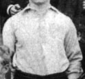
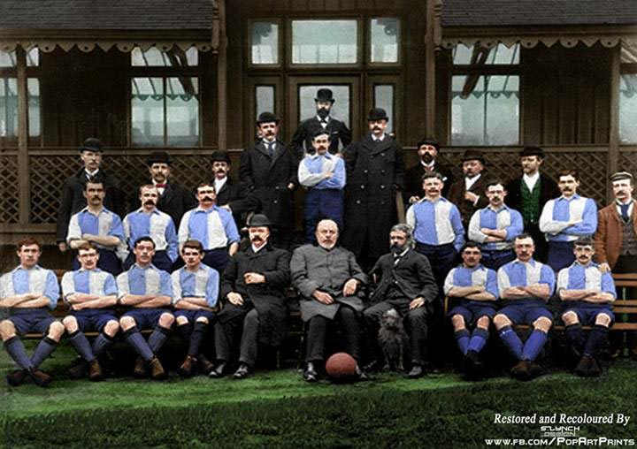
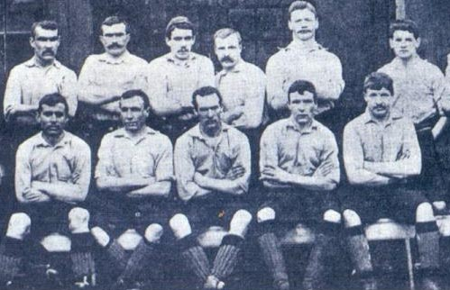
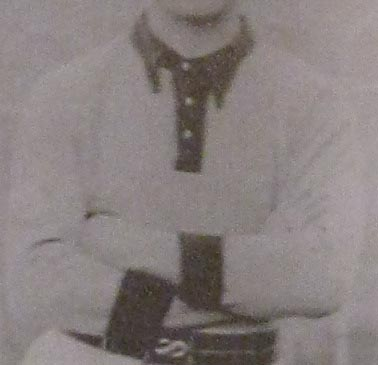
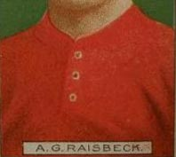

Эволюция формы
Несмотря на ассоциацию клуба с красным цветом, первый комплект футболок Ливерпуля был действительно светло-голубой / белый.
Есть предположение, что это было связано с тем что, образование клуба происходило с переездом старого арендатора стадиона Энфилд (Эвертон), и синий цвет был связан с этим и на складе клуба остались неиспользованные комплекты формы. Тем не менее, Эвертон играл с 1891 по 1895 год в футболках цвета "рубин".
Данное изображение - первая домащнея футболка Ливерпуля, взята из командной фотографии сезона 1893-94. Почему же та плохо заметны цвета на фотографии, Дело в том как мне написал David Moor, цвет футболок был не как раньше предпологали, сине / белый, а светло-голубой / белый. И главное светло-голубой цвет не так легко различим на фотографиях Викторианской эпохи.
Это и есть командная фотография лета 1892, где на игроках Ливерпуля надета домашнея футболка (рубашка),
Это одна из первых фотографий команды сезона 1892-93, из которой мы можем предположить, что игроки Ливерпуля в белых футболках и тёмных трусах, гетры тёмного комбинированного цвета, выездная футболка (рубашка).
Игроки Ливерпуля впервые появились на поле в красных футболках в выездном матче Division One на стадионе Olive Grove против Sheffield Wednesday (01.09.1896). Общей фотографии команды сезона 1896-97 сейчас нет.В книге "Tops of The Kops" Peter Crilly, есть описание первой футболки Ливерпуля, это как выездная футболка, но красного цвета, воротник и манжеты тёмно-красного или чёрного цвета, 2 фото (ниже) (с права полный комплект формы).
Есть только такие фото (фото с фотографий команды с сезонов 1897-88 и 1898-99), если правильно рубашки Ливерпуля. Так же есть несколько фотографий игроков Ливерпуля в красной рубашке с карманом на правой стороне, в частности Harry Storer, но он в футболке (рубашке) Арсенала или Ливерпуля, кто знает сейчас. Буду уточнять. Ливерпуль играл в них с 1897 по 1901 год. По сезону 1901-02, много вопросов.
Только с сезона 1901-02 тоявились на игроках Ливерпуля футболки, они были с круглым вырезом и тремя пуговицами. Ливерпуль играл в них с 1901 по 1904 год.